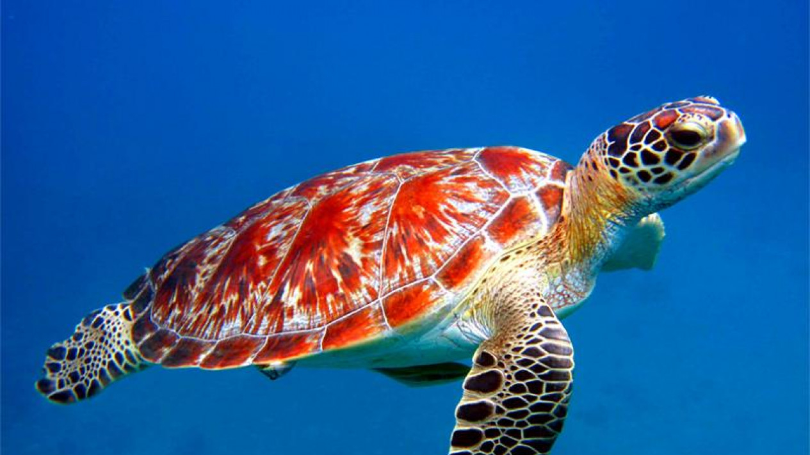
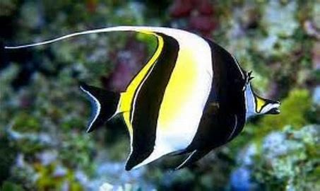

Penyu adalah hewan yang banya di temukan bertelur di beberapa pesisir pantai di Indonesia sejak dahulu.

Ikan badut ini dapat dikenali dengan warna jingganya. Ikan ini tumbuh mencapai 8 cm serta termasuk kedalam ikan terpopuler didunia.

LionFish atau volitans adalah ikan berbisa milok keluafrga yang Scorpaenidae terjemahan halfiah berarti ikan kalajengkin

Ikan Moorish Idol adalah salah satu ikan yang cukup populer di kalangan ara hobi ikan hias karena bentuknya yang unik dan pola warnanya yang menarik